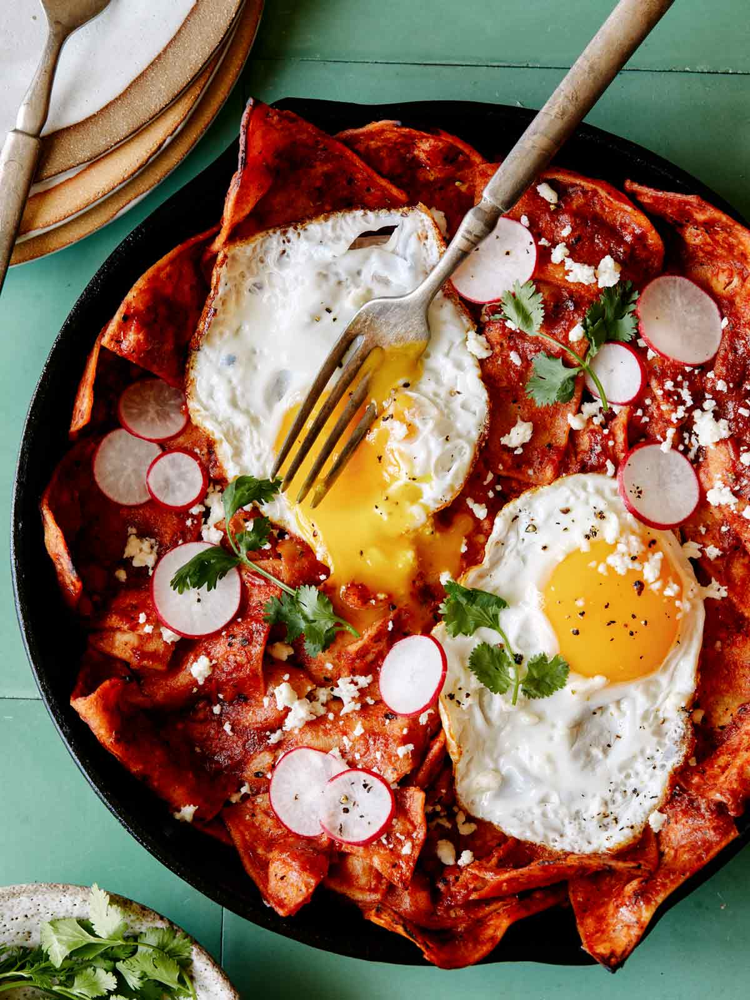

What are Chilaquiles?

Chilaquiles are a traditional Mexican food that consist of fried
tortilla chips in a somewhat spicy sauce. They are the perfect breakfast
for anyone since they are so easy to make and are delicious. Their
versatility also makes them a perfect lunch or even dinner. Pair them
with eggs, sour cream, and queso fresco for the perfect breakfast, or
add steak, side of beans, and a side of spanish rice for the perfect
lunch/dinner.
In this article we will be learning how to make these delicious breakfast
chilaquiles step by step. We will go through the ingredient list and soon
you will be enjoying this delicious Mexican food!
Ingredients
- Tortillas
- Canola oil
- 7 Roma tomatoes
- 1 white onion
- Water
- 5 Guajillo chiles, seeded
- 2 Serrano chiles
- Garlic cloves
- Salt and pepper
- Dried oregano
Toppings
- Mexican sour cream
- Queso fresco
- Eggs
- Salsa
- Avocado
How to make the perfect chilaquiles
Tortilla chips
-
Fill a pan with the canola oil and let it preheat to
medium high heat
-
Cut your tortillas to small triangular pieces
-
Once preheated, fry tortillas until they are a golden color
-
Still hot, sprinkle salt on the tortilla chips and set aside
The red sauce
-
In a saucepan add your water, tomatoes, quarter of the onion
Guajillo chiles, serrano chiles, and garlic cloves
-
Bring the water to a soft boil then reduce the heat to medium-low
-
Once the tomatoes are soft remove the saucepan from stove
-
Add your cooked vegetables to a blender and set aside a cup
of the water
-
Add your salt, pepper, and oregano to taste and blend until
well-combined
-
If sauce is too thick keep on adding water and blending until
you reach the perfect consistency
Making the chilaquiles
-
Add oil to a skillet over medium heat
-
Add your tomato and chile sauce
-
Turn your heat to low and bring sauce to a simmer, stirring
regularly until the sauce thickens
-
Once thickened, add your tortilla chips and stir over low heat
-
Mix until the tortilla chips are coated in the sauce
Enjoy your delicious chilaquiles with a fried egg, sour cream, queso
fresco and avocado. If the spice isn't enough for you, add your
favorite salsa. Enjoy!